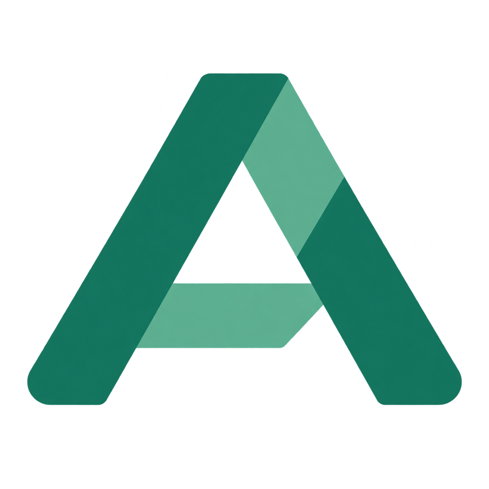

<!doctype html>
<html lang="en">
<meta charset="utf-8">
<meta name="viewport" content="width=device-width, initial-scale=1">
<title>Agat — GitHub social preview</title>
<style>
  * { box-sizing: border-box; }
  html, body { margin: 0; width: 1280px; height: 640px; background: #f6f8f7; }
  body { font-family: -apple-system, BlinkMacSystemFont, "Segoe UI", sans-serif; color: #18372f; padding: 56px 64px; }
  header { display: flex; align-items: center; gap: 16px; font-size: 36px; font-weight: 750; letter-spacing: 3px; }
  header img { width: 57px; height: 57px; object-fit: contain; }
  .badge { margin-left: auto; font-size: 14px; letter-spacing: 3px; color: #3f7562; border: 1px solid #adc7ba; border-radius: 30px; padding: 12px 20px; }
  h1 { margin: 64px 0 22px; font-size: 70px; line-height: 1.05; letter-spacing: -3px; font-weight: 720; }
  h1 span { color: #18755c; }
  .subtitle { font-size: 24px; line-height: 1.6; color: #5b6c66; margin: 0; }
  .flow { position: absolute; left: 835px; top: 206px; display: grid; gap: 20px; width: 335px; }
  .node { position: relative; border: 1px solid #d6e3db; border-radius: 15px; background: white; padding: 18px 24px; font-size: 21px; }
  .node:not(:last-child)::after { content: ""; position: absolute; width: 2px; height: 21px; background: #a6c3b3; top: 100%; left: 29px; }
  .node strong { display: inline-flex; align-items: center; justify-content: center; width: 26px; height: 26px; border-radius: 8px; background: #e8f3ed; color: #18755c; margin-right: 16px; font-size: 15px; }
  .node.approval { border-color: #6caa91; background: #eaf5ee; }
  footer { position: absolute; bottom: 47px; left: 64px; right: 64px; padding-top: 24px; border-top: 1px solid #d6e3db; display: flex; justify-content: space-between; font-size: 18px; color: #5b6c66; }
</style>
<header>AGAT <span class="badge">LOCAL FIRST</span></header>
<main>
  <h1>AI agents.<br><span>Your infrastructure.</span></h1>
  <p class="subtitle">Local models. Visual workflows.<br>Human approvals. Execution history.</p>
  <div class="flow" aria-label="Example workflow">
    <div class="node"><strong>1</strong>Agent</div>
    <div class="node approval"><strong>2</strong>Human approval</div>
    <div class="node"><strong>3</strong>Saved result</div>
  </div>
</main>
<footer><span>github.com/Solutions-of-Security/Agat</span><span>Apache 2.0</span></footer>
</html>
